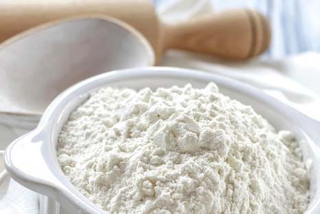

 Sagu adalah tepung atau olahan yang diperoleh dari pemrosesan teras batang rumbia atau "pohon sagu" (Metroxylon sagu Rottb.). Tepung sagu memiliki karakteristik fisik yang mirip dengan tepung tapioka. Dalam resep masakan, tepung sagu yang relatif sulit diperoleh sering diganti dengan tepung tapioka sehingga namanya sering kali dipertukarkan, meskipun kedua tepung ini berbeda. Sagu merupakan makanan pokok bagi masyarakat di Maluku dan Papua yang tinggal di pesisir. Sagu dimakan dalam bentuk papeda, semacam bubur, atau dalam olahan lain. Sagu sendiri dijual sebagai tepung curah maupun yang dipadatkan dan dikemas dengan daun pisang. Selain itu, saat ini sagu juga diolah menjadi mi. Sebagai sumber karbohidrat, sagu memiliki keunikan karena diproduksi di daerah rawa-rawa (habitat alami rumbia). Kondisi ini memiliki keuntungan ekologis tersendiri, walaupun secara ekonomis kurang menguntungkan (menyulitkan distribusi).